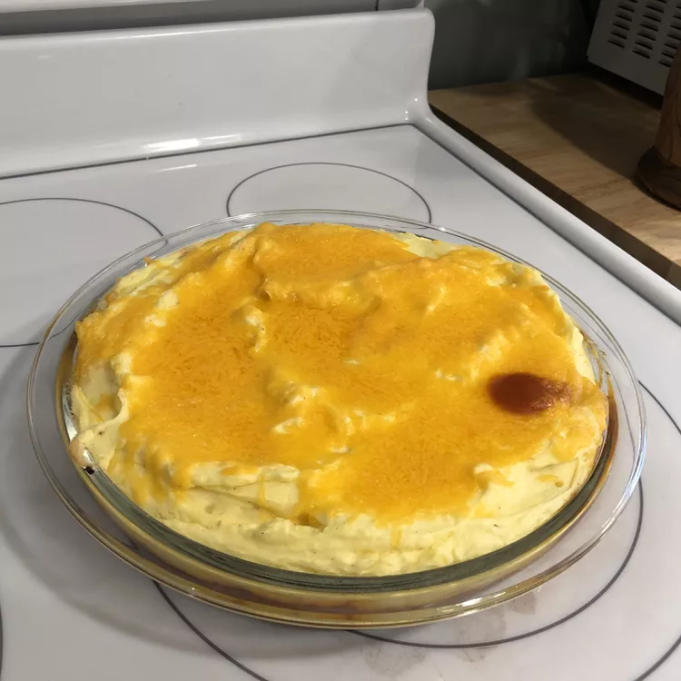

A hamburger pie recipe handed down from my mother.
Preheat the oven to 350 degrees F (175 degrees C). Grease a 1 1/2-quart casserole dish with cooking spray.
Place potatoes into a large pot and cover with salted water; bring to a boil. Reduce heat to medium-low and simmer until tender, about 20 minutes; drain. Set aside to cool in a large bowl.
Meanwhile, heat a large skillet over medium-high heat. Cook and stir ground beef and onion in the hot skillet until beef is crumbly, evenly browned, and no longer pink, about 10 minutes. Stir in green beans and condensed soup until well combined; transfer to the prepared casserole dish.
Mash cooled potatoes with warm milk, beaten egg, garlic, pepper, and salt until smooth; spread evenly over beef mixture. Sprinkle with Cheddar cheese.
Bake in the preheated oven until cheese is melted and the edges begin to brown, 25 to 30 minutes.